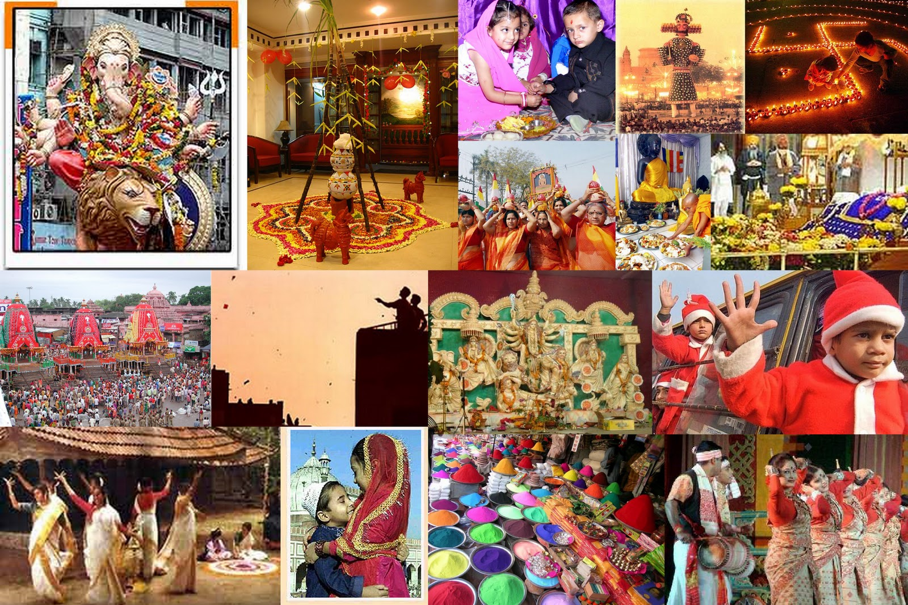

Happy Diwali
During the festival of Diwali, people light up their homes and commercial outlets. Lord Ganesh is worshipped for prosperity and welfare whereas Goddess Lakshmi is worshipped for wisdom and wealth. The festival usually falls in the months of November or October and is celebrated to mark the return of Lord Rama from 14 years of exile. In many parts of the country, the festival is celebrated for five consecutive days. Undoubtedly, it is the most famous Indian festival, which is regarded as a celebration of life. In a few parts of the country, the festival denotes the beginning of the New Year. Deepavali is a five-day festival.
Happy Diwali To All
Happy Navratri
ANavratri is also known as Durga Puja in West Bengal. People over there especially women play with colors. Navratri is one of those festivals. It is a nine day festival in India and on the tenth day, the concluding ceremony is done. During these nine days, we worship Goddess Durga and her other idols. From the very first day, all the idols of goddess Durga are being designed and decorated in such a way that they look immensely beautiful and it absolutely seems like they have come to life again.
Happy Navratri To All
Abiut Festival
During the festival of Diwali, people light up their homes and commercial outlets. Lord Ganesh is worshipped for prosperity and welfare whereas Goddess Lakshmi is worshipped for wisdom and wealth. The festival usually falls in the months of November or October and is celebrated to mark the return of Lord Rama from 14 years of exile. In many parts of the country, the festival is celebrated for five consecutive days. Undoubtedly, it is the most famous Indian festival, which is regarded as a celebration of life. In a few parts of the country, the festival denotes the beginning of the New Year. Deepavali is a five-day festival.
About Festival
Happy Uttarayan
Makar Sankranti is one of the most significant festivals of the Hindu religion. It is celebrated on 14th or 15th January every year. It is the festival which is celebrated across the country with different names and customs. People enjoy the festivities of the season by various activities like dancing, singing and enjoying the delicacies which is especially made with til (sesame seed) and jaggery. People also fly kites and enjoy the festival with their family and friends.
Happy Holi
Holi is a major Hindu festival of India, celebrated in the Hindu calendar month of Phalgun. The festival lasts for one night and one day, beginning on a Purnima (full moon day) in Phalgun. It usually corresponds to March month of the Gregorian calendar. Holi is a festival of joy and love and is fervently celebrated in the Indian sub-continent, especially in India and Nepal. It is also called festival of colours, as people take to streets and play with colours. Unlike most Hindu festivals, Holi doesn’t involve veneration of any of Hindu Gods or Goddesses and is thus purely celebrated for fun. Though, the night before Holi, a ritual of Holika Dahan is carried out, in which people burn their discarded belongings in a bonfire.
Happy Holi To All